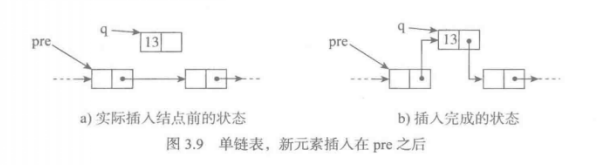
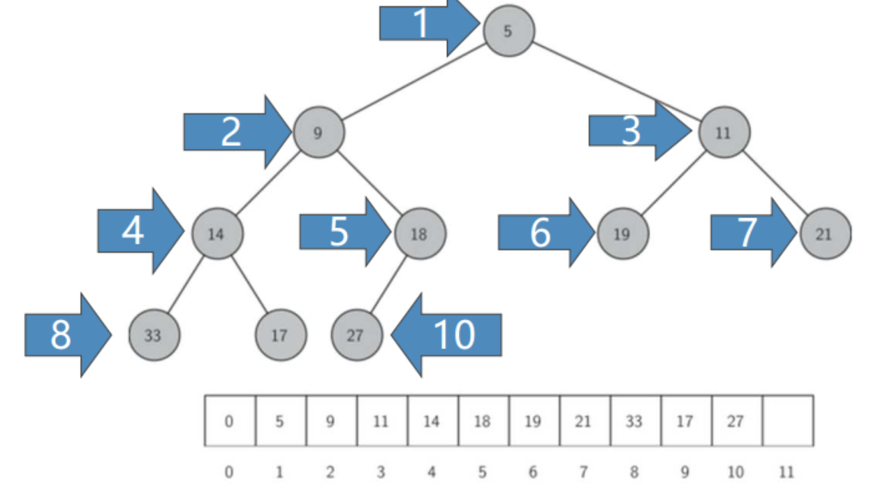
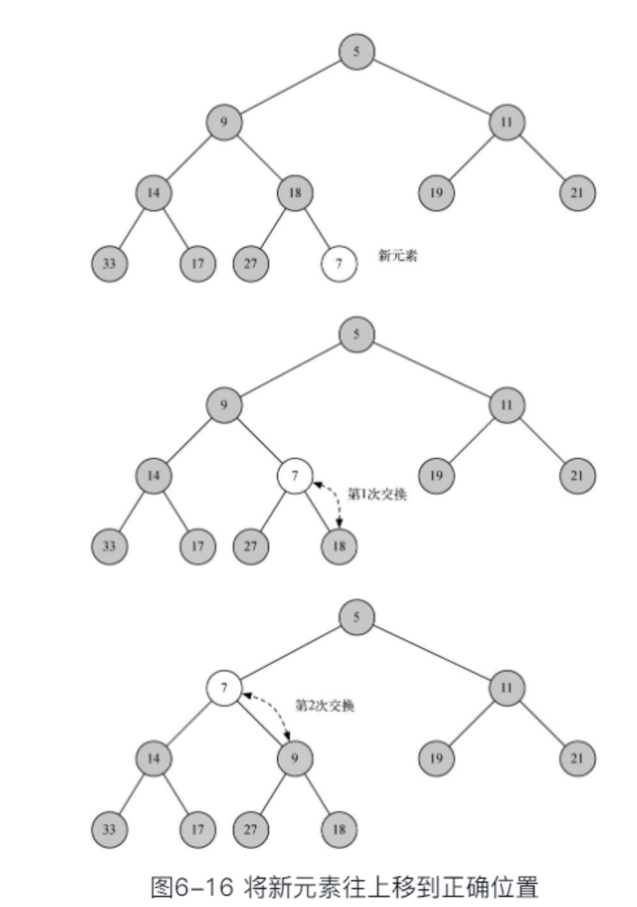
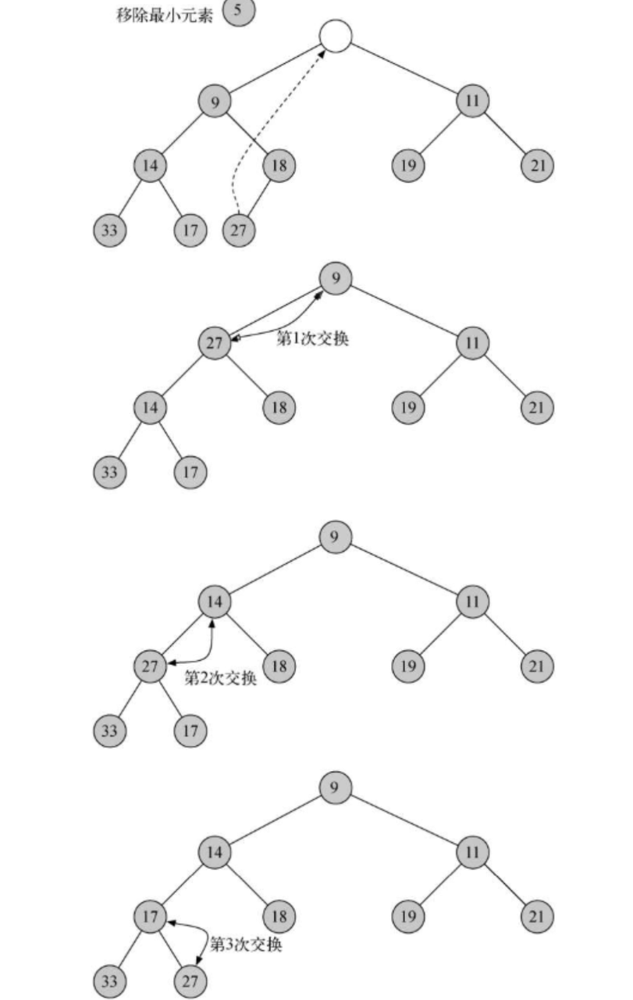
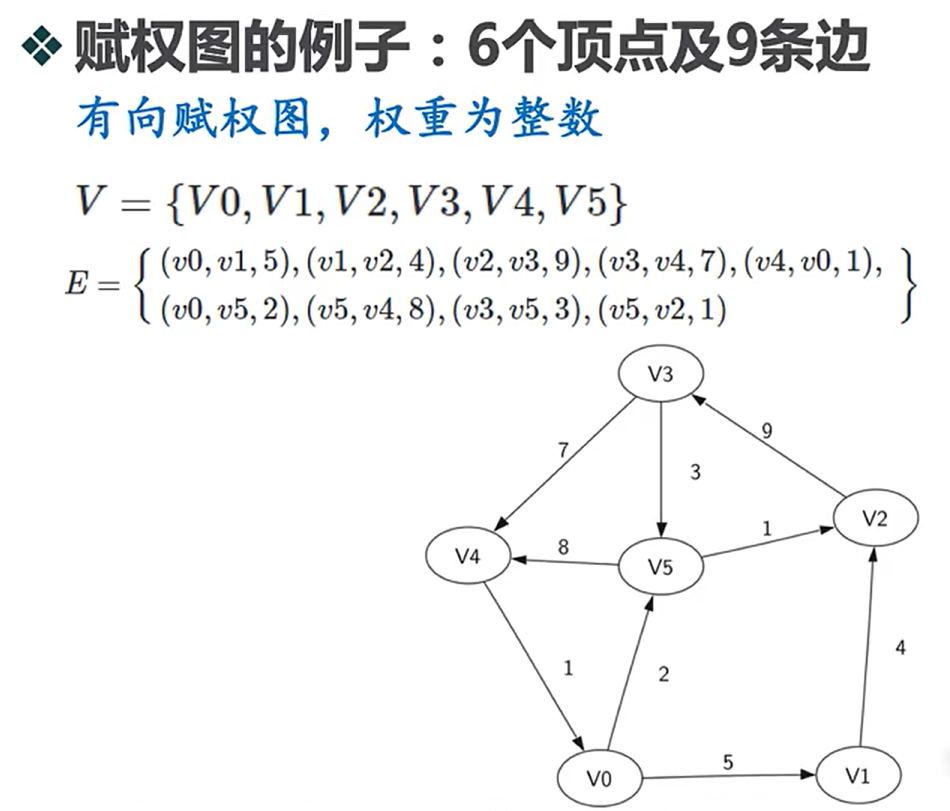
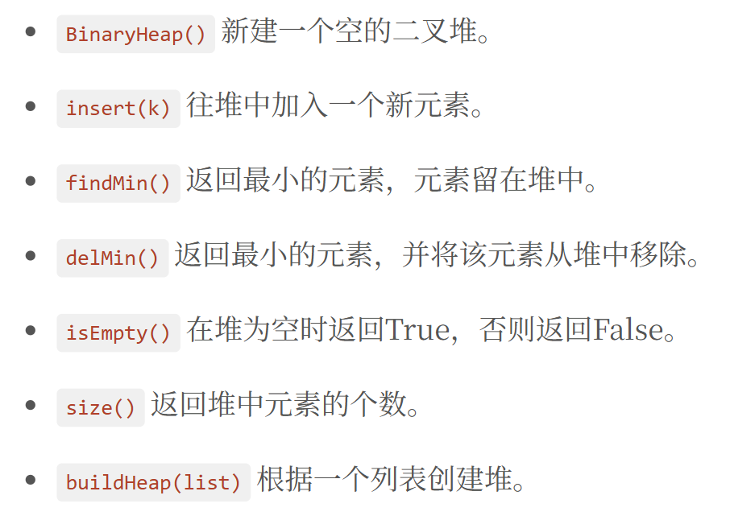
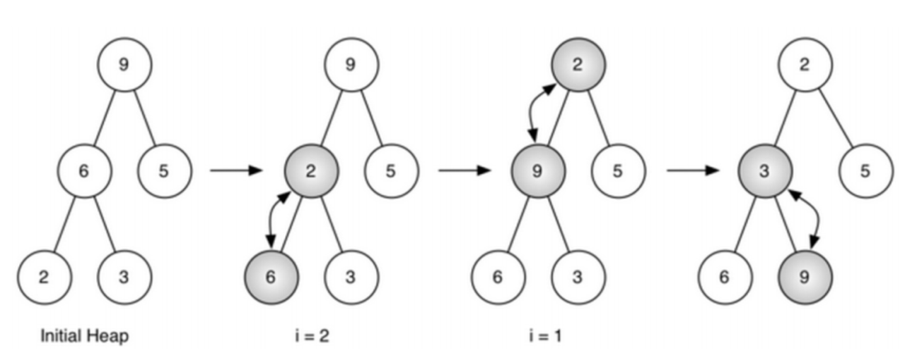
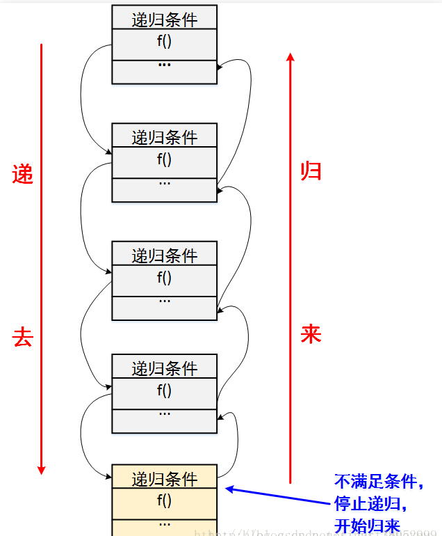
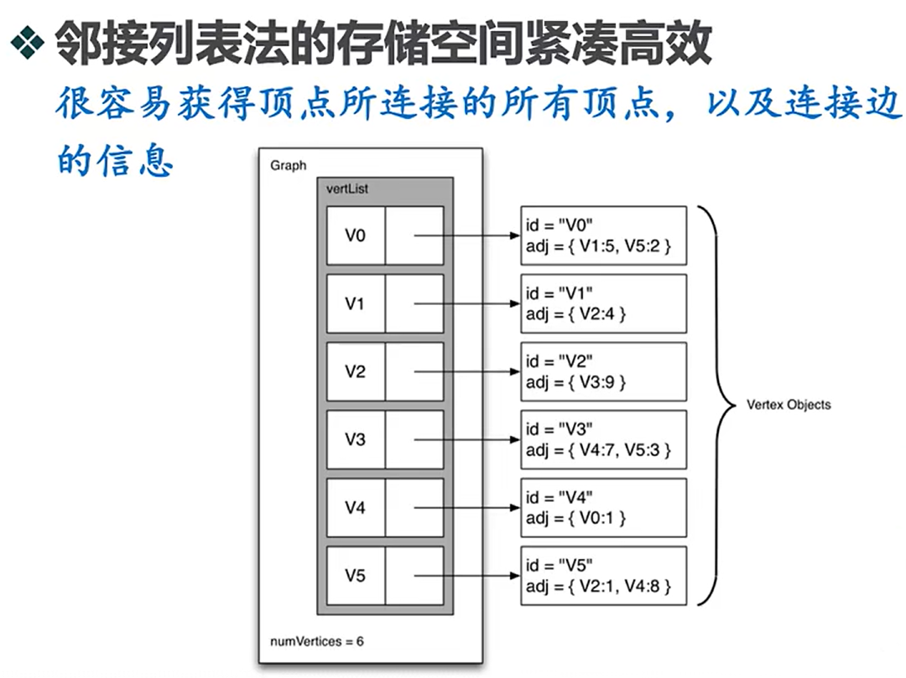

二、数据结构篇
2.1 线性结构
（1）线性结构的定义
线性结构按先后次序组织元素。除首项外，每项有一个直接前驱；除末项外，每项有一个直接后继。这是逻辑次序，不要求元素在内存中相邻。
本节区分两个问题：从哪里存取？ 栈只开放一端，队列从一端进、另一端出，双端队列两端都可进出。怎样保存次序？ 顺序表依靠连续槽位，链表依靠节点之间的链接。
（2）栈 Stack
① 栈的概念
栈（Stack）只允许从同一端插入和移除元素，这一端称为栈顶。因此，最后入栈的元素最先出栈（LIFO）。

- 现实应用：浏览器的back, word的撤销（undo）操作
- 操作：
Stack()：创建空栈push(item)：将item压入栈顶pop()：移除并返回栈顶元素peek()：读取栈顶元素，不移除isEmpty()：判断栈是否为空size()：返回元素数量
class Stack:
def __init__(self):
self.items = []
def push(self, item):
self.items.append(item)
def pop(self):
return self.items.pop()
def peek(self):
return self.items[-1]
def size(self):
return len(self.items)
def isEmpty(self):
return (self.items == [])② 栈的应用
栈的应用（一）括号匹配

- 思路：从左到右对括号进行堆栈，如果是右括号，则抵消一个左括号；如果最后剩下左括号或者右括号，说明括号不匹配
## 栈的应用：括号匹配（只匹配小括号） def bracketMatcher(brackets: str) -> bool: stack = Stack() for brac in brackets: if brac == '(': stack.push(brac) elif brac == ')': if stack.isEmpty(): # 一旦右括号落到了栈底，那么匹配失败 return False stack.pop() return stack.isEmpty() # 最后看是否剩余左括号来判断是否成功匹配## 栈的应用：复杂括号匹配（可以匹配大中小括号） def bracketMatcher_v2(brackets: str) -> bool: stack = Stack() matches = {'(':')', '[':']', '{':'}'} for brac in brackets: if brac in '([{': stack.push(brac) elif brac in ')]}': # 如果右括号不等于上一个堆栈对应的括号，就是错的！ if stack.isEmpty() or matches[stack.peek()] != brac: return False stack.pop() return stack.isEmpty()
栈的应用（二）：十进制转二进制
栈的应用（三）：中缀转后缀表达式
波兰表达式（Polish Notation），也称为前缀表达式，是一种数学表达式的表示方法，由波兰数学家扬·卢卡西威茨（Jan Łukasiewicz）在20世纪20年代提出。它的特点是运算符位于操作数之前，因此无需使用括号来表示运算的优先级。
- 无需括号：由于运算符的顺序已经明确了运算的优先级，波兰表达式不需要括号。
- 结构清晰：按运算符及其操作数的个数识别子表达式。
以 (1 + 2) * (3 + 4) 为例：
- 中缀：
(1 + 2) * (3 + 4) - 前缀（波兰表达式）：
* + 1 2 + 3 4 - 运算符在操作数前。每个运算符的操作数个数已知，因此不需要额外括号；也可以用栈来求值。
（3）队列 Queue
① 队列的概念
队列（Queue）遵循先进先出（FIFO）：新元素从队尾入队，最早入队的元素从队首出队。打印任务和键盘输入缓冲都是按到达顺序处理数据的例子。
Python实现
class Queue:
def __init__(self):
self.items = []
def isEmpty(self):
return self.items == []
def enqueue(self, item):
self.items.insert(0, item) # 复杂度为O(n)
def dequeue(self):
return self.items.pop()
def size(self):
return len(self.items)② 队列的应用
队列的应用（一）：Josephus问题
约瑟夫问题：若干人围成一圈，从第一人开始报数，每数到第 k 人就将其移出，从下一人重新报数。怎样确定最后留下的人？
用队列表示圆圈：将队首移到队尾，重复 k - 1 次，然后移除当前队首。每轮减少一人，直到队列只剩一个元素。
def JosephusRing(namelist, num):
q = Queue()
for name in namelist: # 全部入队
q.enqueue(name)
while q.size() > 1:
for _ in range(num -1):
q.enqueue(q.dequeue()) # 队首出队，队尾入队
q.dequeue() # 出队
return q.dequeue()队列的应用（二）：打印机队列建模
class Printer:
def __init__(self, ppm):
self.pagerate = ppm # 初始化打印速度
self.currentTask = None # 打印任务
self.timeRemaining = 0 # 任务倒计时
def tick(self):
if self.currentTask != None:
self.timeRemaining = self.timeRemaining - 1
if self.timeRemaining <= 0:
self.currentTask = None
def busy(self):
if self.currentTask != None:
return True
else:
return False
def startNext(self, newtask):
self.currentTask = newtask
self.timeRemaining = newtask.getPages() * 60 / self.pagerate
class Task:
def __init__(self, time):
self.timestamp = time
self.pages = random.randrange(1, 21)
def getStamp(self):
return self.timestamp
def getPages(self):
return self.pages
def waitTime(self, currentTime):
return currentTime - self.timestamp
def newPrintTask():
num = random.randrange(1, 101)
if num == 100:
return True
else:
return False
def simulation(T, PPM):
printer = Printer(PPM)
printQueue = Queue()
waitingtimes = []
# 时间开始流逝......
for currentSecond in range(T):
# 以一定概率随机生成任务, 并加入队列
if newPrintTask():
task = Task(currentSecond)
printQueue.enqueue(task)
# 将队列任务加入到打印机
if not (printer.busy() or printQueue.isEmpty()):
nexttask = printQueue.dequeue()
waitingtimes.append(nexttask.waitTime(currentSecond))
printer.startNext(nexttask)
# 打印机当前任务-1s
printer.tick()
avg_waiting = sum(waitingtimes)/len(waitingtimes)
return avg_waiting（4）双端队列 Deque
- 既可以从尾端加入移除，也可以从首端加入或移除（同时具备了队列和栈的特性）
- 应用：回文词判定（先将单词加入deque，再从两端同时移除字符并判定是否相同，直到deque中剩0/1个字符 ）
（5）线性表 Linear List
- 线性表是最基础的线性结构，栈和队列是操作受限的线性结构，是线性表的子集。
- 顺序表和链表是线性表的两种实现方式（储存方式）
（6）顺序表
定义：
表中元素顺序存放在一片足够大的连续存储区里，首元素(第一个元素)存入存储区的开始位置，其余元素依次顺序存放。元素之间的逻辑顺序关系通过元素在存储区里的物理位置表示(隐式表示元素间的关系)。

如果每个元素大小相等：直接储存；
如果元素大小不等：在内存中存入链接，通过链接间接访问
顺序表的操作：
- 创建空表：分配一块元素存储，记录表的容量，并将元素计数值设为0.（创建新表的存储区后，应立即将两个表信息记录域(max和num)设置好，保证这个表处于合法状态。）
- 不修改表结构的操作：直接访问O1，查找On
- 加入元素：尾端加入O1，非保序插入O1，保序插入On（因为要逐一下移）
- 删除元素：同理

顺序表的结构

分离式顺序表结构的优点：可以实现扩充容量：
另外申请一个更大的元素储存区
把表中原有的元素复制到新的储存区
改变表对象的元素区链接
实际加入新元素
动态顺序表后端插入技术（考虑尾端插入n个元素的平均复杂度）
线性增长策略 On
倍增策略 O1（付出了空间代价）
Python的List
- list就是一种采用分离式技术实现的动态顺序表。
在Python的官方系统中,list实现采用了如下的实际策略:在建立空表(或者很小的表)时，系统分配一块能容纳8个元素的存储区;在执行插入操作(insent或append等)时，如果元素区满就换一块4倍大的存储区。但如果当时的表已经很大，系统将改变策略，换存储区时容量加倍。这里的“很大”是一个实现确定的参数，目前的值是50000。引入后一个策略是为了避免出现过多空闲的存储位置。如前所述，通过这套技术实现的1ist，尾端加入元素操作的平均时间复杂度是 O(1)。
（7）链表
单链表由节点串接而成。每个节点保存元素和指向后继的链接，表头引用第一个节点；普通单链表的末节点以 None 表示结束。查找第 i 项需要从表头逐步向后走。

链表的操作：
- 创建空链表：表头指针设置为空
class LNode:
def __init__(self, elem, next_ = None):
self.elem = elem
self.next = next_- 删除链表：丢弃链表的所有节点（在Python中，只需把表头指针设置为None，解释器就会自动收回不用的存储）
- 判断链表是否为空：将表头指针的值与空链接比较
- 插入元素：


# 在首端插入元素
q = LNode(13)
q.next = head # 先接住旧表头，再更新 head
head = q # 修改表头指针，使之指向新结点
# 在中间/尾端插入元素
q = LNode(13)
q.next = pre.next # 把原结点的next域的值存入新结点的next域
pre.next = q # 让pre的next域指向新结点- 删除元素：

# 删除表首元素 只需要修改表首的指针，使其指向表中第二个结点
head = head.next
# 删除表中任意一个元素
pre.next = pre.next.next- 扫描、定位和遍历
- 链表的反转*
- 链表的排序*
① 用 Python 实现单链表
沿用上面的 LNode：节点保存元素和后继，链表对象只保存头节点。头插时先让新节点指向旧表头；删除时让前驱绕过目标节点。删除表头没有前驱，需要单独更新 head。
class LinkedList:
def __init__(self):
self.head = None
def prepend(self, value):
self.head = LNode(value, self.head)
def __iter__(self):
node = self.head
while node is not None:
yield node.elem
node = node.next
def remove(self, value):
prev, node = None, self.head
while node is not None:
if node.elem == value:
if prev is None:
self.head = node.next
else:
prev.next = node.next
return True
prev, node = node, node.next
return False
xs = LinkedList()
for value in (3, 2, 1):
xs.prepend(value)
assert list(xs) == [1, 2, 3]
assert xs.remove(2) and list(xs) == [1, 3]头插是 O(1)；按值删除需要先找到节点，最坏是 O(n)。
② 链表的变体与类的继承
链表持有节点，是组合关系。变体可以沿用 prepend、remove 和迭代接口，但不一定能直接继承实现：上例以 None 作为遍历终点，直接用于循环链表会一直绕圈。判断能否复用方法，要看它依赖的链接规则是否仍然成立。
③ 循环单链表
尾节点指回头节点。只有一个节点时，它的后继就是自己；遍历非空表时，访问头节点一次，之后再次回到头节点就停止。若保存尾指针 tail，表头就是 tail.next；头插只需令新节点指向旧表头，再让 tail.next 指向新节点。
④ 双链表
每个节点多保存一个前驱 prev。例如从 A ⇄ B ⇄ C 删除 B，需要同时令 A.next = C 和 C.prev = A。已知节点时删除为 O(1)，按值查找仍是 O(n)。若目标是首尾节点，还要更新表头或表尾；多出的前驱链接换来反向遍历能力。
2.2 哈希表（散列表）
（1）哈希表的定义
哈希表（散列表）是按键存取数据的结构。查找时，先用哈希函数计算键的哈希值，再将它映射到数组中的槽位。槽位是查找的起点，而不是键的身份；最终仍须比较键是否相等。
- 冲突：不同键映射到同一槽位。例如槽号取
key % 5时，12 和 17 都落在槽 2。 - 负载因子：表中元素数除以槽位数。负载越高，通常要处理的冲突越多；预留过多槽位则浪费空间。
- 查找代价：若计算哈希值和比较键的成本为常数，在散列均匀、负载受控时，期望时间为 O(1)；大量碰撞时，最坏可达 O(n)。
完美哈希针对给定的一组键，使不同键落入不同槽位。键集合改变后，原函数不一定仍然无冲突，因此普通哈希表需要冲突处理机制。
（2）哈希函数设计
- 一致性：相等的键必须产生相同的哈希值；键存入表后，参与散列的状态不能改变。
- 分布：让常见输入尽量均匀地落入不同槽位，减少聚集。
- 成本：定位本身也需要时间，例如首次逐字符计算长度为 L 的字符串的哈希值通常需要 O(L) 时间。
整数键可直接对槽位数取模。字符串可用多项式把字符顺序纳入计算：下式中，s_i 是字符编码值，p 是基数，m 是槽位数。
与文件摘要的区别。 哈希表关心键在槽位间的分布；下面的 MD5 示例则为字节串计算固定的 128 位摘要。MD5 可以检测非恶意的数据变化，但摘要相同不能证明文件相同，也不应将它用于安全签名。
import hashlib
s = "hello world"
md5_value = hashlib.md5(s.encode()).hexdigest()
print(md5_value) # 输出: 5eb63bbbe01eeed093cb22bb8f5acdc3（3）冲突解决
沿用键 12 和 17 的例子：12 已占据槽 2，此时插入 17，常见方法有两种。
- 开放寻址法：换一个槽位。 线性探测逐槽向后找，容易形成连续聚集；二次探测使用二次偏移；双重哈希用另一个哈希函数决定步长。查找必须遵循插入时的探测规则。删除时不能随意把中途的槽标为从未使用，否则会截断查找路径。
- 链地址法：留在同一个桶。 两个键都放入桶 2。查找时先定位桶，再在桶内比较键。删除只需移除对应条目，但桶内结构需要额外空间。
另一种取舍：布谷鸟哈希。 每个键有固定数量的候选位置，查找只检查这些位置；插入却可能需要搬移已有条目，甚至重建表。
（4）Python语言中的哈希应用
dict 和 set 都通过哈希表实现高效查找。在 CPython 中，两者使用各自的实现。
CPython 的 dict 用开放寻址存储键值对。查询 d[key] 时，先用 hash(key) 确定探测起点，再沿探测序列检查候选键；确认相等后，才返回对应值。set 只保存元素，不保存关联值。两者对键或元素有相同的要求：可哈希。
可哈希对象在生命周期内的哈希值不能变化；相等的对象必须有相同的哈希值。list、dict 和 set 不可哈希；按身份比较和散列的自定义对象可以有可变属性。
2.3 树与二叉树
（1）树的定义与术语
有根树用父子关系组织节点。非空树有一个根；除根外，每个节点恰有一个父节点。从根到任一节点有且只有一条路径。递归地看，非空树由根和它的若干棵子树构成。
- 节点与边：节点保存键和附加数据，边连接父节点与子节点。同一父节点的子节点互为兄弟；没有子节点的是叶节点。
- 深度与高度：以边数计，根的深度为 0；从根到某节点的路径长度是其深度。树的高度等于最大深度。
- 二叉树：每个节点至多有两个子节点，且区分左、右位置。只有左孩子和只有右孩子是两种不同的结构。
（2）树的遍历
前序遍历
在前序遍历中，先访问根节点，然后递归地前序遍历左子树，最后递归地前序遍历右子树。
中序遍历
在中序遍历中，先递归地中序遍历左子树，然后访问根节点，最后递归地中序遍历右子树。
后序遍历
在后序遍历中，我们先递归地后序遍历访问左子树和右子树，最后访问根节点
def preorder(tree):
"""前序遍历"""
if tree:
print(tree.getRootVal())
preorder(tree.getLeftChild())
preorder(tree.getRightChild())
def postorder(tree):
"""后序遍历"""
if tree != None:
postorder(tree.getLeftChild())
postorder(tree.getRightChild())
print(tree.getRootVal())
def inorder(tree):
"""中序遍历"""
if tree != None:
inorder(tree.getLeftChild())
print(tree.getRootVal())
inorder(tree.getRightChild())（3）优先队列与二叉堆
优先队列按优先级而非到达顺序取出元素。二叉堆是它的一种实现：形状是完全二叉树，通常用数组存储。
- 最小堆：父节点的键不大于子节点，根是最小值。
- 最大堆：父节点的键不小于子节点，根是最大值。
堆序只约束父子关系，不要求整个数组有序。查看堆顶为 O(1)；插入或删除堆顶最多沿树高调整，最坏为 O(\log n)。
二叉堆的操作：

完全二叉树：完全二叉树，叶节点最多只出现在最底层和次底层，而且最底层的叶节点都连续集中在最左边，每个内部节点都有两个子节点， 最多可有1个节点例外
- 下标为p
- 左子节点下标为2p
- 右子节点为2p+1
- 父节点下标为p//2

二叉堆的实现
insert(key)方法
新key加在列表末尾，显然无法保持“堆”次序虽然对其它路径的次序没有影响，但对于其到根的路径可能破坏次序
需要将新key沿着路径来“上浮”到其正确位置
注意：新key的“上浮”不会影响其它路径节点的“堆”次序
删除最小键：delMin()
移走堆中最小的键，即根节点 heapList[1]。
为了保持“完全二叉树”的性质，只用最后一个节点来代替根节点.
- 将新的根节点沿着一条路径“下沉”，直到比两个子节点都小
- “下沉”路径的选择：如果比子节点大，那么选择较小的子节点交换下沉


批量建堆：buildHeap(lst)
用insert(key)方法，将无序表中的数据项逐个insert到堆中，但这么做的总代价是O(nlog n)
其实，用“下沉”法，能够将总代价控制在O(n)

class BinHeap:
def __init__(self):
self.heapList = [0] # 0项无用，但为了后面代码可以用到简单的整数乘除法，仍保留它。
self.currentSize = 0
def percUp(self, i):
'''上浮操作'''
while i//2 > 0: # 终止条件：1//2 = 0 也就是当下标回溯到根节点的时候，停止循环
# 子节点和父节点的值比较，如果子节点小于父节点的值，则交换次序
if self.heapList[i] < self.heapList[i//2]:
self.heapList[i], self.heapList[i//2] = self.heapList[i//2], self.heapList[i]
i = i//2
def percDown(self, i):
'''下沉操作'''
def minChild(i):
'''找最小子节点'''
if i*2+1 > self.currentSize: # 如果没有右节点
return i*2
else:
if self.heapList[i*2] < self.heapList[i*2+1]:
return i*2
else:
return i*2+1
while (i*2) <= self.currentSize:
minchild = minChild(i)
# 父节点与其最小的子节点作比较，如果大于，则下沉交换
if self.heapList[i] > self.heapList[minchild]:
self.heapList[i], self.heapList[minchild] = self.heapList[minchild], self.heapList[i]
i = minchild
def insert(self, k):
self.heapList.append(k) # 把数据添加到堆底
self.currentSize += 1
self.percUp(self.currentSize)
def delMin(self):
'''移走整个堆中最小的key:根节点heapList[1]'''
minval = self.heapList[1]
self.heapList[1] = self.heapList[self.currentSize] # 将最后一个堆值替代堆顶值
self.currentSize -= 1
self.heapList.pop() # 移除最后一个堆值
self.percDown(1)
return minval
def buildHeap(self, lst):
'''策略: 从最后一个非叶结点开始下沉，复杂度为O(n)'''
i = len(lst)//2 # 最后一个非叶节点的位置
self.currentSize = len(lst)
self.heapList = [0] + lst[:]
while i > 0:
self.percDown(i)
i -= 1
print(self.heapList)（4）二叉查找树（BST）
二叉搜索树，它是映射的另一种实现，映射抽象数据类型前面两种实现，它们分别是列表二分搜索和散列表。
性质：比父节点小的key都出现在左子树，比父节点大的key都出现在右子树。

节点与树。 TreeNode 保存键、值和子节点引用；BST 通过 self.root 持有根节点，通过 self.size 记录节点数。
插入或更新：put(key, val)
- 若树为空，创建根节点
TreeNode(key, val)。 - 否则由
_put(key, val, currentNode)比较键：小于当前键走左侧，大于当前键走右侧。在选定的一侧遇到空位，就挂上新节点。 - 若键相等，只更新
currentNode.payload。只有新建节点才增加self.size。
按键查找：get(key)
查找沿用插入时的比较规则，但不创建节点。_get(key, currentNode) 命中时返回节点，走到空子树时返回 None。对外的 get(key) 返回节点存储的值，而不是节点本身；空树或键不存在时返回 None。
插入和查找都只沿一条路径进行，耗时取决于树高。下面的实现只演示这两种操作，不含删除。
class BST:
def __init__(self):
# 初始化二叉搜索树
# root 指向根节点
# size 记录树中节点数量
self.root = None
self.size = 0
def put(self, key, val):
"""
插入操作：根据 key 把 (key, val) 插入到 BST 中
如果 key 已存在，则覆盖原有值
"""
if self.root:
# 树已存在根节点 -> 调用递归辅助方法插入
self._put(key, val, self.root)
else:
# 空树 -> 新建根节点
self.root = TreeNode(key, val)
self.size += 1 # 别忘了根节点也要计数
def _put(self, key, val, currentNode):
"""
递归辅助方法：从 currentNode 开始，根据 key 大小选择插入到左/右子树
"""
if key < currentNode.key:
# 如果 key 更小 -> 去左子树
if currentNode.hasLeftChild():
# 左子树存在 -> 递归继续插
self._put(key, val, currentNode.leftChild)
else:
# 左子树不存在 -> 新建节点放这里
currentNode.leftChild = TreeNode(key, val, parent=currentNode)
self.size += 1
elif key > currentNode.key:
# 如果 key 更大 -> 去右子树
if currentNode.hasRightChild():
# 右子树存在 -> 递归继续插
self._put(key, val, currentNode.rightChild)
else:
# 右子树不存在 -> 新建节点放这里
currentNode.rightChild = TreeNode(key, val, parent=currentNode)
self.size += 1
else:
# 如果 key 相等 -> 覆盖当前节点的数据
currentNode.payload = val
return
def get(self, key):
"""
查找操作：根据 key 在 BST 中查找值
如果找到返回 payload，否则返回 None
"""
if self.root:
res = self._get(key, self.root)
if res is not None: # 找到节点
return res.payload
else:
return None
else:
return None
def _get(self, key, currentNode):
"""
递归辅助方法：从 currentNode 开始查找 key
"""
if not currentNode:
# 遍历到空节点 -> 没找到
return None
elif currentNode.key == key:
# 命中目标
return currentNode
elif key < currentNode.key:
# key 更小 -> 去左子树查找
return self._get(key, currentNode.leftChild)
else:
# key 更大 -> 去右子树查找
return self._get(key, currentNode.rightChild)BST 的形态取决于插入顺序。对比 [10, 20, 30, 40, 50] 和 [10, 30, 50, 20, 40]：
10
\
20
\
30
\
40
\
50
# 完全退化成链表
10
\
30
/ \
20 50
/
40
# 稍微平衡一些（5）平衡二叉查找树（AVL）
普通 BST 依次插入 10、20、30，会变成向右延伸的链。AVL 保留二叉查找树的大小关系，同时要求每个节点的左右子树高度差不超过 1。取平衡因子为“左高减右高”，上例根节点 10 的平衡因子变为 −2。
旋转改变父子关系，不改变中序次序。 对 10 左旋，20 成为根，10 和 30 分居左右，中序仍是 10、20、30。左左失衡用右旋，右右用左旋；左右、右左失衡则先旋子节点，再反向旋失衡节点。插入或删除后沿祖先路径更新高度并恢复平衡，树高保持 O(\log n)。
2.4 图的术语与表示
（1）图的术语
图由顶点集合 V 和边集合 E 构成，记为 G=(V,E)。顶点表示对象，可以保存标识和数据；边表示对象之间的关系。
- 方向：有向边 A→B 不代表 B→A；无向边连接的两个顶点地位对称。
- 权重：边可以附带数值，例如距离、时间或费用。权重的含义由问题决定。

- 路径：Path，由边依次连接起来的顶点序列；
- 无权路径的长度为边的数量
- 带权路径的长度为所有边权重的和
- 圈：Cycle，首尾顶点相同的路径
如果有向图中不存在任何圈，则称作：有向无圈图（Directed Acyclic Graph, DAG）。DAG有很好的性质，可以用算法去解决。
（2）图的表示与实现
以有向边 A→B、A→C 为例：邻接表记录 A: [B, C]，B、C 的出邻居为空；若矩阵行列按 A、B、C 排列，A 行是 [0, 1, 1]，另外两行全为 0。矩阵可直接查指定边，邻接表适合逐个枚举邻居；稀疏图不必为不存在的边留出矩阵单元。
邻接矩阵用行、列分别表示起点与终点。查看指定边只需访问一个单元，耗时 O(1)；无论实际有多少边，矩阵都需要 O(|V|^2) 空间。

邻接表为每个顶点保存邻居及可选的边权。空间为 O(|V|+|E|)；枚举一个顶点的出邻居，只需遍历它自己的邻接记录。

class Vertex:
def __init__(self, key):
self.id = key
self.connectedTo = {}
def addNeighbor(self, nbr, weight=0):
self.connectedTo[nbr] = weight
def __str__(self):
return f"{self.id} connected to {[x.id for x in self.connectedTo]}"
def getConnections(self):
return self.connectedTo.keys()
def getId(self):
return self.id
def getWeight(self, nbr):
return self.connectedTo[nbr]
class Graph:
def __init__(self):
self.vertList = {}
self.numVertices = 0
def addVertex(self, key):
if key not in self.vertList:
self.vertList[key] = Vertex(key)
self.numVertices += 1
return self.vertList[key]
def addEdge(self, f, t, weight=0):
start, end = self.addVertex(f), self.addVertex(t)
start.addNeighbor(end, weight)
def getVertex(self, key):
return self.vertList.get(key)
def getVertices(self):
return self.vertList.keys()
def __contains__(self, key):
return key in self.vertList
def __iter__(self):
return iter(self.vertList.values())